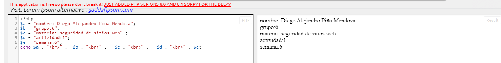

| ACT 1 | en la actividad 1 lo que hicimos fue conocer el programa de php y conocer como identificar variables y conocer el "echo" que sirve para imprimir varias variables que las defines con el codigo de $"aqui pones una letra o palabra para definirla" |
| ACT 2 | Struts se basa en el patron de arquitectura de software Modelo-vista.controlador(MVC) el cual se utiliza apliamente y es considerado de gran solidez. El procedimiento se separa en tres secciones diferenciadas llamadas ell modelo, las vistas y elcontrolador. |
| ACT 3 | es un framework de inyeccion de independencias que pueden ser utilizado en app hechas con java donde la relacion o dependencia entre objetos de negocio necesita ser asministrada o mantenida |
| ACT 4 | es un framework de inyeccion de independencias que pueden ser utilizado en app hechas con java donde la relacion o dependencia entre objetos de negocio necesita ser asministrada o mantenida |
| ACT 5 | es un framework de inyeccion de independencias que pueden ser utilizado en app hechas con java donde la relacion o dependencia entre objetos de negocio necesita ser asministrada o mantenida |